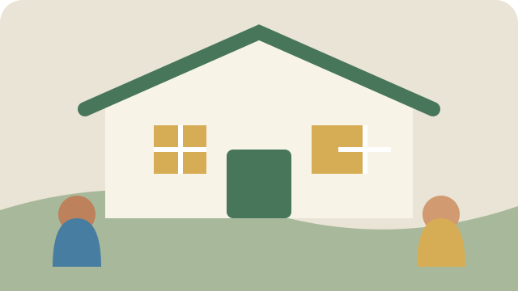

Versão de testeAlgumas informações institucionais e a política de privacidade aguardam validação. O envio de perguntas está desactivado.
Seminário Diocesano São José
E AGORA,
DEUS?
Descobre, escuta, discerne, responde.
Um espaço para descobrires, reflectires, rezares e escutares o caminho que Deus te convida a percorrer.
O teu caminho começa aqui
Escolhe por onde queres começar
Jogo de descoberta
Descobre a tua vocação
A tua vocação é um caminho, não uma resposta automática. Escolhe uma categoria e começa a reflectir.
Como aproveitar: responde com liberdade, sem pressa. Nas perguntas abertas, podes escrever ou apenas pensar. Se estiveres num grupo, partilha apenas aquilo que desejares. O animador deve acolher as respostas sem pressionar ninguém.
Autoconhecimento
Quem sou eu?
Conhecer-te é também aprender a crescer.
Como aproveitar: escolhe a opção que mais se aproxima da tua maneira de agir. Não é um teste psicológico nem uma avaliação da tua personalidade. Usa o feedback como ponto de partida para reconhecer capacidades e aspectos a desenvolver.
Jogo em grupo
Verdade ou Consequência
Respeita cada pessoa. Ninguém é obrigado a responder ou a realizar um desafio.
Regras do grupo: passar a vez é sempre permitido. Não se pedem segredos, confissões íntimas, contacto físico, exposição nas redes ou desafios perigosos. O animador pode adaptar ou retirar qualquer proposta. A finalidade é criar confiança, não constranger.
Jogo em grupo
Gira a Garrafa!
Uma cor, uma proposta e uma oportunidade de descobrir algo novo.
Como jogar: roda a garrafa virtual, lê a proposta da cor sorteada e dá tempo para responder. No quiz, confirma a resposta na Bíblia quando necessário. Ninguém é obrigado a partilhar experiências pessoais; podes passar e continuar.
Reflexão
E se fosse contigo?
Pensa nas tuas escolhas e nas consequências que podem ter para os outros.
Como aproveitar: lê a situação, escolhe uma possibilidade e considera as consequências. Não existe uma resposta automática para todos os casos: o contexto importa. Depois, escreve ou conversa sobre uma alternativa respeitosa e segura. Não uses exemplos para identificar ou julgar pessoas reais.
Participar e descobrir
Jogos e dinâmicas
Cinco propostas para te conheceres melhor, partilhares e reflectires com os outros.
Escuta e oração
Palavra de Deus
«Entrega o teu caminho ao Senhor, confia n'Ele, e Ele tudo fará.»
Salmo 37,5Seminário Diocesano São José
Conhece o Seminário

Formar homens, discípulos e sacerdotes
A formação no Seminário desenvolve-se em quatro dimensões que caminham lado a lado. Cada uma contribui para o crescimento integral da pessoa e para a preparação ao serviço da Igreja.
As 4 dimensões da formação
O que é um padre diocesano?
O padre diocesano é um sacerdote incardinado numa diocese e exerce o seu ministério em comunhão com o Bispo. É enviado para servir a Igreja local, sobretudo nas paróquias e noutras tarefas pastorais que lhe forem confiadas.
A sua missão inclui anunciar a Palavra de Deus, celebrar os sacramentos, acompanhar as pessoas, animar as comunidades e colaborar na missão evangelizadora da Diocese.
Uma história de formação
O Seminário São José foi reaberto na cidade da Praia em 1957, numa iniciativa de Dom José Colaço. O Pe. Nogueira de Sousa teve um papel importante nos primeiros anos, como primeiro Reitor e professor. Ao longo da sua história, o Seminário contribuiu para a formação de pessoas que serviram a Igreja e a sociedade cabo-verdiana em diferentes áreas.
Esta síntese histórica deve ser confirmada e completada pelo Seminário antes da publicação institucional definitiva.
As quatro dimensões da formação
A formação procura integrar a pessoa toda. As dimensões não são etapas isoladas: acompanham-se e completam-se ao longo do caminho.
- Espiritual: crescer na amizade com Cristo, na oração, na escuta da Palavra e na vida sacramental.
- Humana: amadurecer, conhecer-se, desenvolver liberdade responsável e aprender a viver relações saudáveis.
- Intelectual: estudar, pensar criticamente e aprofundar a fé para compreender melhor o mundo e a missão da Igreja.
- Pastoral: aprender a servir, acompanhar pessoas e comunidades e anunciar o Evangelho na realidade concreta.
Uma vida em comunidade

Rezar, estudar, partilhar refeições, participar na pastoral, trabalhar e conviver fazem parte do caminho formativo. A rotina habitual inclui momentos de oração, aulas, estudo pessoal, tarefas comunitárias, descanso, desporto e convívio. O horário pode mudar conforme as necessidades da formação e da vida da Diocese.
A experiência comunitária ensina a partilhar responsabilidades, respeitar diferenças, pedir ajuda e crescer com os outros. A formação não acontece apenas nas aulas ou na capela: também se aprende no trabalho quotidiano, nas amizades e no serviço.
Como se discerne uma vocação?
O discernimento não consiste em descobrir uma resposta mágica ou tomar uma decisão apressada. É um caminho feito de oração, escuta da Palavra, conhecimento de si, participação na comunidade e diálogo com pessoas que possam acompanhar o processo.
Sentir curiosidade ou admiração pelo sacerdócio não significa, por si só, ter uma vocação. É importante dar tempo, conhecer a vida do Seminário e conversar com um sacerdote ou responsável vocacional.
Jovem, achas que Deus te chama a ser padre?
Não tenhas medo de colocar essa pergunta. Procura conhecer melhor esta vocação, apresenta a tua vida a Deus na oração e conversa com alguém que te possa acompanhar com liberdade e respeito.
Fonte do emblema do Seminário: Vatican News, 14 de Outubro de 2025.
Os links acima encaminham para os canais indicados pelo Seminário.
Escuta e acompanhamento
Pergunta aos Seminaristas
A tua voz, em confiança
Um espaço para escutar, esclarecer dúvidas e acompanhar quem procura compreender melhor o seu caminho.
Aplicação
Definições
Privacidade e informação
Consulta a informação sobre a forma como os dados são tratados nesta aplicação.
Definições · Privacidade
Política de Privacidade
Informação de privacidade — versão de teste
Estado actual da aplicação
Esta versão é apresentada para testes. O formulário «Pergunta aos Seminaristas» apenas prepara um rascunho temporário no próprio ecrã: não envia a pergunta, não cria uma conta e não a guarda numa base de dados. As respostas e reflexões dos jogos também não são submetidas à equipa do Seminário.
Dados introduzidos pelo utilizador
Não introduzas nomes, contactos, dados de saúde, informações familiares delicadas ou outros dados pessoais nos campos de reflexão. O rascunho da pergunta existe apenas enquanto a página permanece aberta e perde-se ao sair ou actualizar a página.
Dados técnicos de acesso
A aplicação está alojada através de serviços de terceiros. O fornecedor de alojamento poderá tratar dados técnicos necessários à entrega, segurança e funcionamento do serviço, de acordo com a sua própria configuração e política. A configuração concreta, os registos gerados e os respectivos prazos ainda têm de ser confirmados antes da publicação institucional definitiva.
Responsável pelo tratamento e contactos
A identificação jurídica da entidade responsável pelo tratamento, o endereço de contacto para assuntos de privacidade e o procedimento para exercer direitos ainda não foram confirmados nesta versão. Esta informação deverá ser preenchida e aprovada pelo Seminário antes de activar qualquer formulário ou recolha de dados.
Direitos e reclamações
A legislação cabo-verdiana prevê direitos relativos à informação, acesso e, nos termos legais, rectificação, apagamento ou bloqueio e oposição ao tratamento. Para informação oficial, consulta a Comissão Nacional de Protecção de Dados (CNPD). Os meios concretos para exercer os direitos junto do responsável da aplicação serão indicados na política institucional final.
Legislação e autoridade de controlo
O enquadramento geral inclui a Lei n.º 133/V/2001, alterada, designadamente, pela Lei n.º 41/VIII/2013 e pela Lei n.º 121/IX/2021, bem como o artigo 45.º da Constituição da República de Cabo Verde. A aplicação concreta ao projecto deve ser confirmada por quem tenha competência jurídica.
Mensagens e situações urgentes
O envio de mensagens está desactivado. Esta aplicação não é um serviço de emergência nem garante acompanhamento imediato ou confidencialidade de situações comunicadas por outros canais. Em caso de perigo ou urgência, procura directamente ajuda junto dos serviços competentes e de uma pessoa de confiança.
Importante: este texto é uma informação provisória para testes, não uma política de privacidade institucional juridicamente validada. Antes de recolher qualquer dado, o Seminário deve confirmar o responsável pelo tratamento, contactos, fornecedores e serviços utilizados, finalidades, fundamentos, prazos de conservação, direitos, procedimentos e medidas de segurança, e aprovar o texto final.